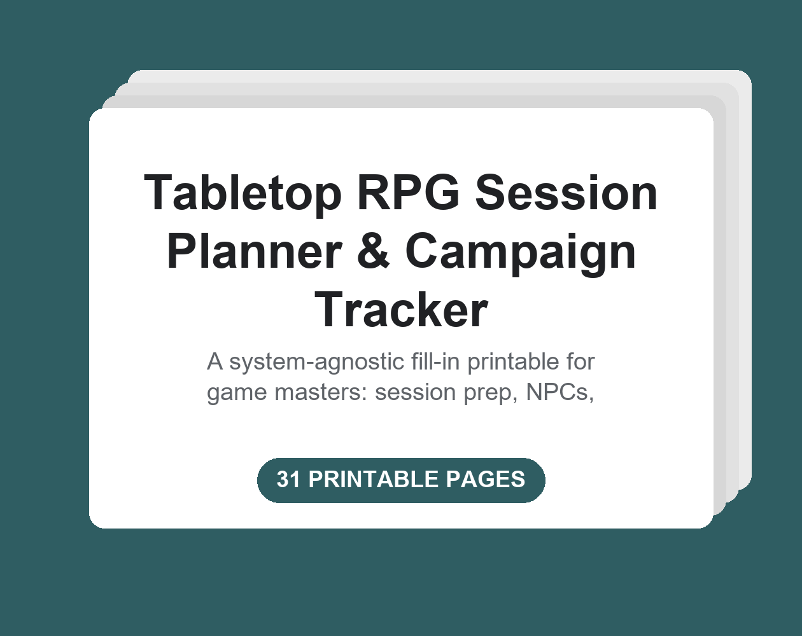

Tabletop RPG Session Planner & Campaign Tracker
$4.50 - instant PDF download - 31 pages
Buy nowSecure checkout by Stripe. You'll get the download right after paying.
Tabletop RPG Session Planner & Campaign Tracker
A blank, fill-in printable planner for game masters who want session prep, NPCs, quests, combat, and loot in one binder-ready place instead of scattered notebooks.
Format: PDF, 31 pages, US Letter (8.5 x 11 in), black and white to save ink, with a hole-punch-friendly margin for binders.
What's inside
- How to Use This Planner: a quick guide to the layout
- Campaign Overview: the premise, tone, setting notes, and key themes
- Session Prep Checklist: steps to get ready before each game
- NPC Tracker: names, roles, motivations, and notes
- Location Log: places, descriptions, and what happened there
- Quest & Plot Thread Tracker: open threads, status, and next steps
- Initiative & Combat Tracker: turn order, hit points, conditions, and round notes
- Loot & Treasure Log: items found, who holds them, and notes
- Player Character Quick Reference: key details for each player character
- Session Recap: what happened, decisions made, and hooks for next time
- Campaign Timeline: events in order, so you don't lose the thread
- Party Notes & House Rules: a place to write down your table's agreements
- Ideas & Notes: free space for anything else
Who it's for
Game masters and players of tabletop role-playing games, especially new and solo GMs running weekly or biweekly sessions. It is system-agnostic, so you can use it for fantasy, sci-fi, horror, or any other genre.
What it is NOT
This is a blank fill-in printable. It is not a rulebook, adventure module, or game system, and it does not include pre-written stories, stat blocks, or rules. You supply the game and the ideas; the planner gives you somewhere to keep them organized.
How to print
1. Open the PDF and choose US Letter paper.
2. Print at 100% / Actual size (not "Fit to page") so the margins stay accurate.
3. Black and white or grayscale is fine.
4. Punch holes on the margin side and add to a binder, or use as loose sheets.
5. Print extra copies of the pages you use most, such as the NPC tracker or combat tracker.
Please note
- This is a digital download. No physical item will be shipped.
- For personal use. Please don't resell or redistribute the file.
- Compatible with any tabletop RPG. It is not affiliated with or endorsed by any game publisher.
AI-assistance note: This planner was designed with AI assistance and reviewed by the shop owner.
This planner was designed with AI assistance and reviewed and approved by the shop owner.